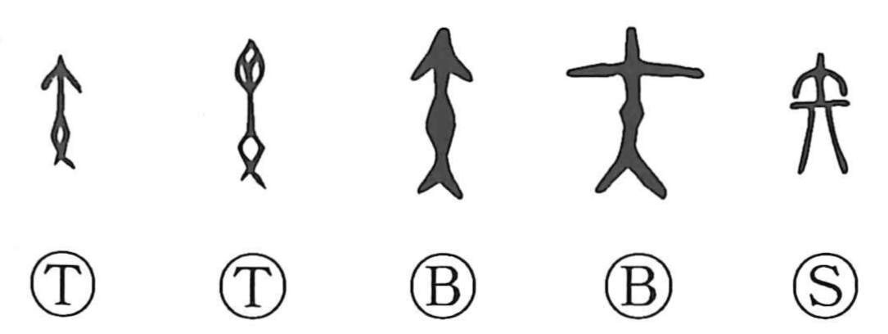

矢

Kun: ya | On: shi
arrow
Explanation
A straightforward pictograph of an arrow. In ancient ritual practice, arrows were treated as sacred objects and served as tokens in oath-taking; one might even swear by breaking an arrow. The verb chikau, “to swear,” as written in 誓, originally evokes the cutting of plants and trees in oath rites, an act closely akin to the snapping of an arrow. The character thus preserves the image of the sacred arrow at the center of such vows.